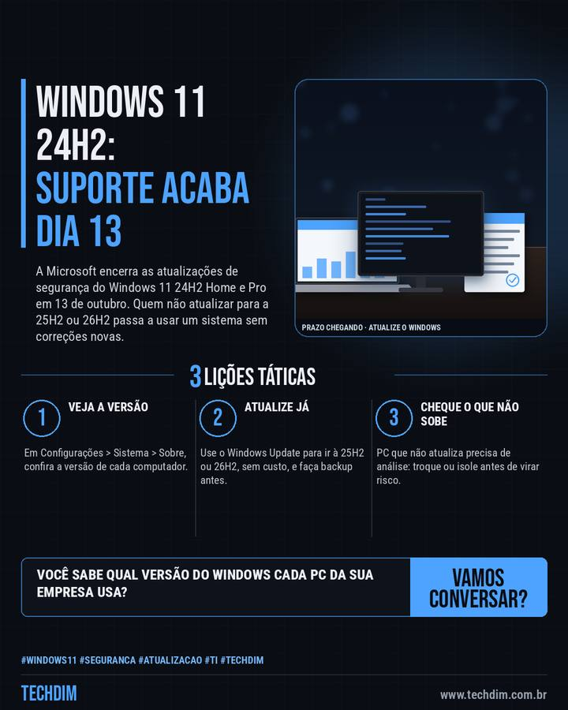

Notícia de tecnologia
Windows 11 24H2 Home e Pro perde atualizações de segurança em 13 de outubro
A Microsoft encerra as atualizações de segurança do Windows 11 24H2 Home e Pro em 13 de outubro. Quem não atualizar para a 25H2 ou 26H2 passa a usar um sistema sem correções novas.

Em resumo
- Segundo a Microsoft, o Windows 11 versão 24H2 (Home e Pro) termina o suporte em 13 de outubro de 2026, no horário do Pacífico: depois disso, não recebe mais atualizações mensais de segurança
- As versões 25H2 e 26H2 seguem com suporte até outubro de 2027 e outubro de 2028; a atualização para elas é gratuita pelo Windows Update
- Veja em Configurações > Sistema > Sobre qual versão cada computador usa e programe a atualização antes da próxima terça-feira de correções
Quantos computadores da sua empresa ainda estão no Windows 11 24H2? Confira esta semana.
Por que importa
Prazo próximo e que atinge qualquer empresa com PCs Windows 11 Home ou Pro; sem atualizações, falhas novas ficam sem correção.
O que fazer na prática
- Veja a versão. Em Configurações > Sistema > Sobre, confira a versão de cada computador.
- Atualize já. Use o Windows Update para ir à 25H2 ou 26H2, sem custo, e faça backup antes.
- Cheque o que não sobe. PC que não atualiza precisa de análise: troque ou isole antes de virar risco.
Fontes consultadas
Mais do Radar de hoje
Leia também
Este texto resume as fontes citadas na data de publicação. Confira sempre o aviso oficial do fabricante antes de agir em produção.